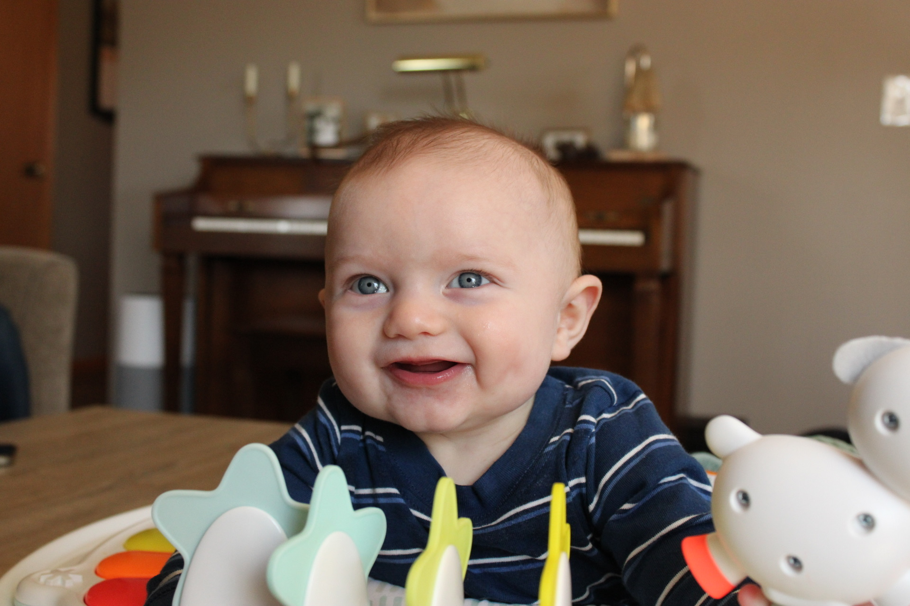
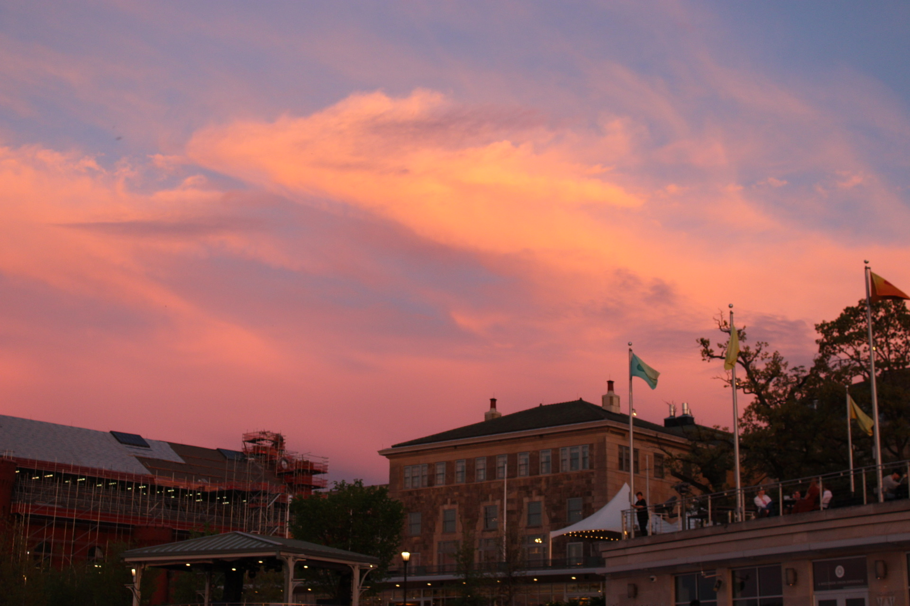
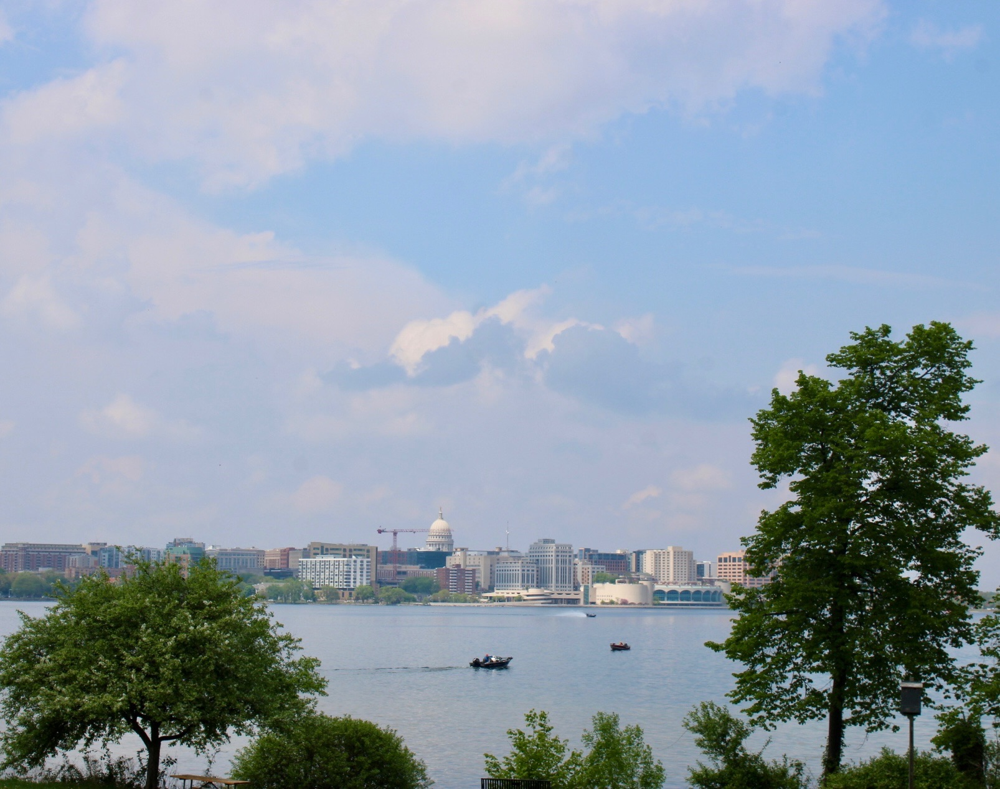

Here are a few of my favorite projects and experiences that represent my creativity and growth.
I love capturing natural light and candid moments. Below are a few of my favorite photos.



Outside of photography, I enjoy baking and testing new recipes. You can see some of my favorite creations below.
During my summer marketing internship, I helped create a custom sticker design to celebrate clients closing on their homes. I wanted something small that could set us apart and also make a big difference in how clients felt. Overall, the stickers were a nice personal touch and helped make the experience feel more special. This project allowed me to combine my creativity and brand storytelling to make a warm impression with clients and staff.
I designed this promotional graphic for our front desk to increase engagement and grow the company’s online audience. The piece combined a vintage newspaper style with digital elements, like a QR code for quick access. The newsletter helped add a sense of personalization to our office and gave clients a closer look at what we do. Through this project, I strengthened my Canva design skills and learned how to use visual marketing materials to support brand identity and communication goals.
Download Newsletter Infographic